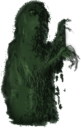

Abandon Hope
Editorial
The End of Sacrifice
by
C.B. Anderson
The New House
by
Kate Bernadette Benedict
Out of the box
by
Alison Brackenbury
A Sonnet for Poets
by
C.E. Chaffin
Travelling Exhibition
by
Richard Epstein
In the Cellar
by
Claudia Gary
Not Quite Death in Midsummer
by
Juleigh Howard-Hobson
Waiting
by
Judy Kaber
The Rapture
by
Janet Kenny
July in January
by
Don Kimball
McGonagall’s Warning from the Beyond
by
William McGonagall III
Horror Vacui
by
Duncan Gillies MacLaurin
The Caterpillar Speaks in Tongues
by
James AL Midgley
Shrine to Satan
by
Rick Mullin
The Tale of the Parrot
by
Kevin Andrew Murphy
Return of the Magus
by
Charles Musser
Pitching Poetry
by
Frank Osen
Doré’s Engravings
by
Rose Poto
The Cricket
by
Thomas Rodes
Coots
by
Rik Roots
The Medical Examiner Comments on Resurrection
by
Joseph S. Salemi
the glue makers’ guild
by
Nic Sebastian
Gandy Dancer of the Phoebe Snow
by
Tom Sheehan
Monsters' Lament
by
Salli Shepherd
Mud
by
Lafayette Wattles
Naughty, Naughty
by
John Whitworth
Garbage
by
Leo Yankevich
The Horror of Yeats and Hughes
by
Duncan Gillies MacLaurin
Clove Smoke
by
Kevin Andrew Murphy
Contributors
Submissions
Past Issues
Feedback
Friends
Exit, Pursued by The Chimaera
